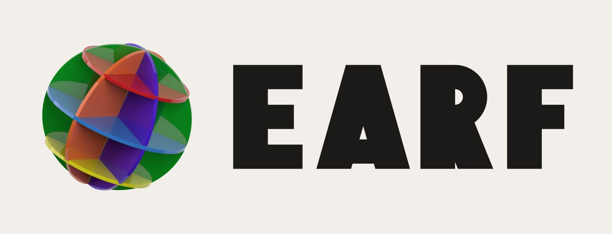
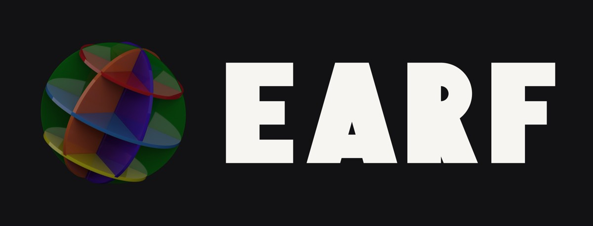
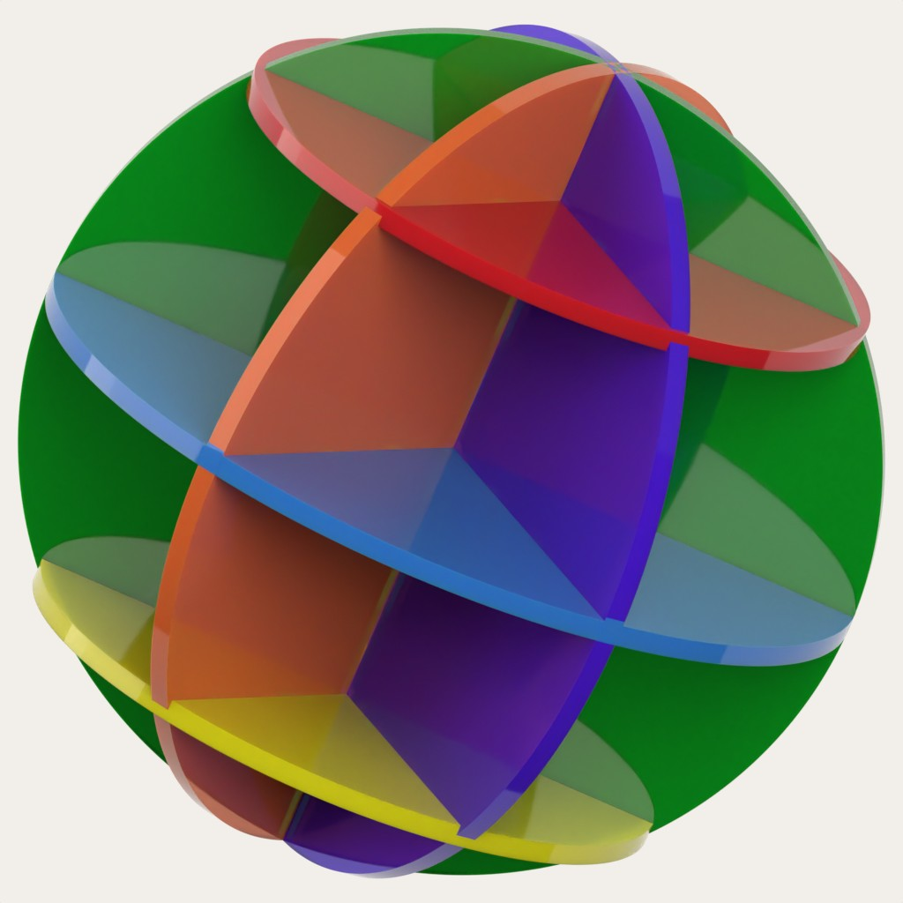
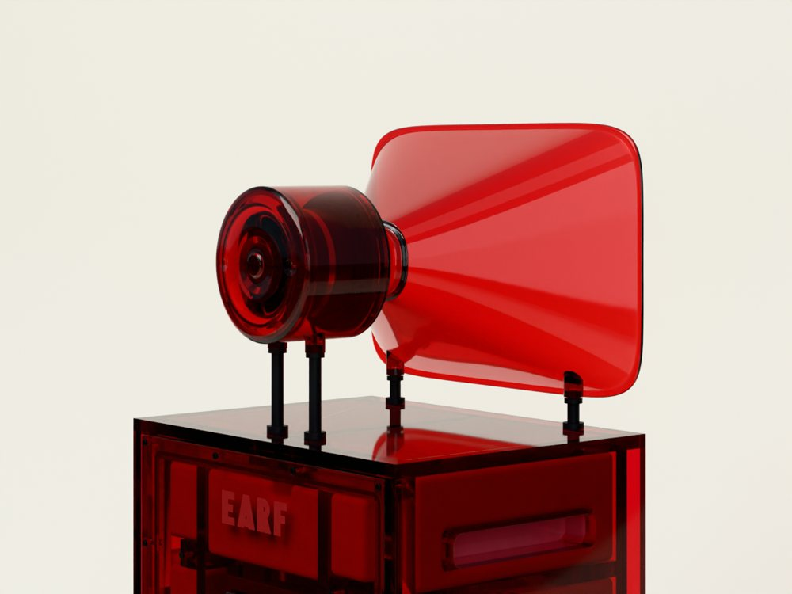
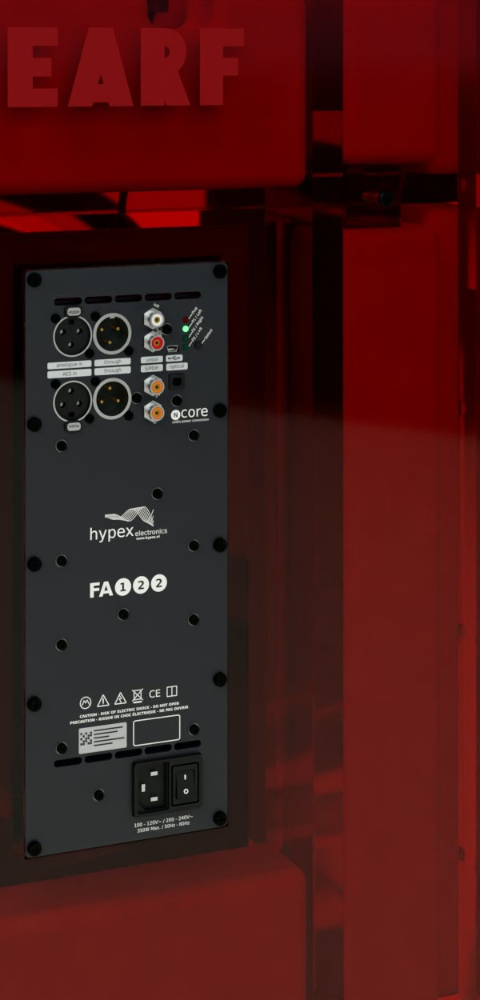

<title>EARF Brand Book</title>
<meta name="claude:viewport-fit-sides" content="cover">
<link rel="preconnect" href="https://fonts.googleapis.com">
<link rel="preconnect" href="https://fonts.gstatic.com" crossorigin>
<link rel="stylesheet" href="https://fonts.googleapis.com/css2?family=IBM+Plex+Mono:wght@400;500&family=Instrument+Sans:wght@400..700&display=swap">
<style>
/* A showroom bound as a book: paper and ink, as earf.world sets them, and the color carried only by the acrylic.
   One light theme by choice (the site's own: every picture stands on a pale ground), with night bands where the
   glow needs them. Chapters run down one column; pictures break out to the full width. */
:root {
  --page: #F4F1EC; --paper: #ECE8E1; --ink: #1C1A18; --muted: #5E5A53; --rule: #D6D0C6;
  --night: #100F12; --night-2: #1A1918; --night-ink: #EDE7DD; --night-muted: #A79F93; --night-rule: #2E2B27;
  --ember: #B50404; --dust: #D35D17; --acid: #C5BC1E; --poison: #027614; --ice: #1169C1; --haze: #500CB4; --fog: #F6F8F8; --smoke: #34323A;
  --sans: 'Instrument Sans', 'Helvetica Neue', Arial, sans-serif; --mono: 'IBM Plex Mono', 'Courier New', monospace;
  --measure: 64ch; --wide: 1240px;
  color-scheme: light;
}
* { box-sizing: border-box }
html { scroll-behavior: auto }
@media (prefers-reduced-motion: reduce) { html { scroll-behavior: auto } }
body { margin: 0; background: var(--page); color: var(--ink); font: 400 17px/1.6 var(--sans); -webkit-font-smoothing: antialiased }
img { max-width: 100%; display: block; height: auto }
a { color: inherit; text-underline-offset: 3px }
a:focus-visible, button:focus-visible { outline: 2px solid var(--ink); outline-offset: 3px }
h1, h2, h3, h4 { margin: 0; font-weight: 600; text-wrap: balance }
p { margin: 0 }

.band { padding-left: max(16px, env(safe-area-inset-left, 0px)); padding-right: max(16px, env(safe-area-inset-right, 0px)) }
.in { max-width: var(--wide); margin: 0 auto }
.night { background: var(--night); color: var(--night-ink) }
.night .eyebrow, .night .muted, .night figcaption, .night .no { color: var(--night-muted) }
.night .rule { border-color: var(--night-rule) }
.paper { background: var(--paper) }

.eyebrow { font: 500 12px/1.3 var(--mono); letter-spacing: .14em; text-transform: uppercase; color: var(--muted) }
.muted { color: var(--muted) }
.lede { font-size: clamp(19px, 2.1vw, 23px); line-height: 1.45; max-width: 52ch; letter-spacing: -.005em }
.prose { display: grid; gap: 16px; max-width: var(--measure) }
.mono { font-family: var(--mono) }
figure { margin: 0; display: grid; gap: 10px; min-width: 0 }
figcaption { font-size: 14px; color: var(--muted); line-height: 1.45 }
figcaption b { font-weight: 600; color: var(--ink) }
.night figcaption b { color: var(--night-ink) }
.render { font: 500 10.5px/1 var(--mono); letter-spacing: .1em; text-transform: uppercase; border: 1px solid currentColor; border-radius: 2px; padding: 3px 5px; white-space: nowrap; vertical-align: 1px }

/* the header: the mark and the chapters */
.top { position: sticky; top: env(safe-area-inset-top, 0px); z-index: 20; background: rgba(244,241,236,.92); backdrop-filter: blur(10px); border-bottom: 1px solid var(--rule) }
body::before { content: ""; position: fixed; inset: 0 0 auto; height: env(safe-area-inset-top, 0px); z-index: 30; background: var(--page) }
.top .in { display: flex; align-items: center; gap: 24px; height: 56px }
.top .mark { display: flex; align-items: center; gap: 10px; text-decoration: none; flex: none }
.top .mark img { height: 22px; width: auto }
.top nav { display: flex; gap: 20px; overflow-x: auto; -webkit-mask-image: linear-gradient(90deg, #000 85%, transparent); mask-image: linear-gradient(90deg, #000 85%, transparent); padding-right: 40px; scrollbar-width: none; font: 500 12px/1 var(--mono); letter-spacing: .1em; text-transform: uppercase; min-width: 0 }
.top nav::-webkit-scrollbar { display: none }
@media (min-width: 861px) { .top nav { flex-wrap: wrap; row-gap: 0; overflow: visible; -webkit-mask-image: none; mask-image: none; padding-right: 0 } .top .in { height: auto; min-height: 56px } }
.top nav a { text-decoration: none; color: var(--muted); white-space: nowrap; padding: 8px 0 }
.top nav a:hover { color: var(--ink) }

/* the cover */
.cover { padding-block: clamp(40px, 7vw, 96px) 0; overflow: hidden }
.cover .in { display: grid; gap: 28px }
.cover h1 { font-size: clamp(30px, 4.2vw, 64px); line-height: .9; letter-spacing: -.045em; font-weight: 600 }
.cover h1 span { display: block; color: var(--muted); font-weight: 500 }
.cover h1 span.tag { color: inherit; font-weight: inherit; font-size: clamp(44px, 7vw, 112px); line-height: .95; margin-bottom: .25em }
.cover h1 span.tag .tg { display: block }   /* the tagline: two lines here, broken after its comma */
.tg { white-space: nowrap }   /* the tagline breaks only after its comma */
.cover h1 span.tag .tg, .lines q .tg, .scale .tg { display: inline; font: inherit; letter-spacing: inherit; text-transform: none; color: inherit }
.cover h1 span.tag .tg { display: block }
.cover .meta { display: flex; flex-wrap: wrap; gap: 10px 28px; justify-content: space-between; align-items: end }
.spectrum { display: grid; grid-template-columns: repeat(8, minmax(0, 1fr)); gap: clamp(3px, .5vw, 6px); margin-top: 4px }
.slab { aspect-ratio: auto; height: 40px; border-radius: 3px; position: relative; background: var(--t);
  box-shadow: inset 0 0 0 1px rgba(255,255,255,.35), inset 0 -20px 30px -20px rgba(0,0,0,.2); max-width: 100% }
.slab::before { content: ""; position: absolute; inset: 0; border-radius: 3px; background: linear-gradient(105deg, rgba(255,255,255,0) 30%, rgba(255,255,255,.32) 42%, rgba(255,255,255,0) 56%) }
.slab::after { display: none; content: ""; position: absolute; left: 6%; right: 6%; bottom: -26px; height: 18px; border-radius: 50%; background: var(--t); filter: blur(10px); opacity: .55 }
.slab span { position: absolute; left: 8px; top: 50%; transform: translateY(-50%); white-space: nowrap; font: 500 10.5px/1 var(--mono); letter-spacing: .08em; color: rgba(255,255,255,.92); text-transform: uppercase }
.slab.light span { color: var(--ink) }
.slab.ink span { color: var(--ink) }
@media (max-width: 480px) { .slab span { font-size: 9px; letter-spacing: 0; left: 5px } }
#cover { scroll-margin-top: 57px }
.slab span i { font-style: normal }
@media (max-width: 900px) { .slab span i { display: none } }
.toc { columns: 3 14em; column-gap: 32px; margin: 0; padding: 0; list-style: none; font-size: 15px; counter-reset: c }
.toc li { break-inside: avoid; padding: 7px 0; border-bottom: 1px solid var(--rule) }
.toc a { text-decoration: none; color: var(--ink) }
.toc span { font: 500 11px/1 var(--mono); color: var(--muted); margin-right: 10px; letter-spacing: .08em }
.cover .hero { margin-top: clamp(36px, 5vw, 64px) }

/* chapters */
.chap { padding-block: clamp(64px, 9vw, 120px) }
.chap > .in { display: grid; gap: clamp(28px, 4vw, 48px) }
.head { display: grid; gap: 14px; max-width: 900px }
.head .no { font: 500 12px/1 var(--mono); letter-spacing: .14em; color: var(--muted) }
.head h2 { font-size: clamp(36px, 5.6vw, 72px); line-height: .98; letter-spacing: -.035em }
.cols { display: grid; grid-template-columns: repeat(3, minmax(0, 1fr)); gap: clamp(20px, 3vw, 40px) }
.cols > div { display: grid; gap: 10px; align-content: start; min-width: 0; border-top: 1px solid var(--rule); padding-top: 18px }
.night .cols > div { border-color: var(--night-rule) }
.cols h3 { font-size: 21px; letter-spacing: -.01em }
.cols.pair { grid-template-columns: repeat(2, minmax(0, 1fr)) }
@media (max-width: 860px) { .cols.pair { grid-template-columns: minmax(0, 1fr) } }
.two { display: grid; grid-template-columns: repeat(2, minmax(0, 1fr)); gap: clamp(14px, 2vw, 24px) }
.three { display: grid; grid-template-columns: repeat(3, minmax(0, 1fr)); gap: clamp(14px, 2vw, 24px) }
.four { display: grid; grid-template-columns: repeat(4, minmax(0, 1fr)); gap: clamp(12px, 1.6vw, 20px) }
.full img { width: 100% }
.three figure img { aspect-ratio: 3 / 2; object-fit: cover; width: 100% }
.three figure.tall img { aspect-ratio: 4 / 5 }
.seven { display: grid; grid-template-columns: repeat(8, minmax(0, 1fr)); gap: clamp(6px, 1vw, 12px) }
.cover .seven { grid-template-columns: repeat(8, minmax(0, 1fr)); gap: clamp(8px, 1vw, 14px) }
.cover .hero { margin-top: 0 }
.cover .hero figure { margin: 0 }
@media (max-width: 560px) { .cover .seven, .seven:not(.mini) { grid-template-columns: repeat(2, minmax(0, 1fr)) } }
.cover .seven figcaption { font-size: 12px }
.seven figure { margin: 0; display: grid; gap: 6px; min-width: 0 }
.seven img { width: 100%; aspect-ratio: 4 / 5; object-fit: cover; border-radius: 3px; display: block }
.seven.mini { grid-template-columns: repeat(8, minmax(0, 1fr)) !important; gap: 4px; padding: 10px }
.sheet .seven.mini img { aspect-ratio: 4 / 5 }
.seven figcaption { font: 500 10.5px/1.3 var(--mono); letter-spacing: .08em; text-transform: uppercase }
.top .mark img { height: 24px }
@media (max-width: 860px) { .cols, .three { grid-template-columns: minmax(0, 1fr) } .four { grid-template-columns: repeat(2, minmax(0, 1fr)) } }
@media (max-width: 620px) { .two { grid-template-columns: minmax(0, 1fr) } }
.big-quote { font-size: clamp(30px, 4.6vw, 60px); line-height: 1.02; letter-spacing: -.035em; font-weight: 600; max-width: 18ch }

/* naming */
.strata { display: grid; gap: 0; border-top: 1px solid var(--rule) }
.stratum { display: grid; grid-template-columns: 230px minmax(0, 1fr) minmax(0, 1.2fr); gap: 24px; padding: 22px 0; border-bottom: 1px solid var(--rule); align-items: baseline }
.stratum h3 { font-size: clamp(28px, 3.4vw, 40px); letter-spacing: -.03em; line-height: 1 }
.stratum .what { font: 500 12px/1.4 var(--mono); letter-spacing: .1em; text-transform: uppercase; color: var(--muted) }
.stratum .why { color: var(--ink) }
@media (max-width: 760px) { .stratum { grid-template-columns: minmax(0, 1fr); gap: 6px } }

/* identity */
.plate { border-radius: 4px; overflow: hidden; display: grid; place-items: center; padding: clamp(24px, 5vw, 64px); min-width: 0 }
.plate.p { background: #F2EFEA } .plate.n { background: #121114 } .plate.k { background: var(--paper) }
.plate img { max-height: 260px; width: auto }
.rules { display: grid; grid-template-columns: repeat(2, minmax(0, 1fr)); gap: 0 40px; margin: 0; padding: 0; list-style: none }
.rules li { padding: 14px 0; border-top: 1px solid var(--rule); display: grid; grid-template-columns: 150px minmax(0, 1fr); gap: 16px }
.rules li b { font: 500 12px/1.6 var(--mono); letter-spacing: .1em; text-transform: uppercase; color: var(--muted); font-weight: 500 }
@media (max-width: 760px) { .rules { grid-template-columns: minmax(0, 1fr) } .rules li { grid-template-columns: minmax(0, 1fr); gap: 4px } }
.clear { position: relative; background: #F2EFEA; border-radius: 4px; padding: clamp(28px, 6vw, 70px); display: grid; place-items: center }
.clear .box { position: relative; outline: 1px dashed rgba(28,26,24,.35); outline-offset: clamp(14px, 3vw, 34px) }
.clear .box img { height: clamp(60px, 10vw, 120px); width: auto }
.clear .cs { position: absolute; left: 12px; top: 10px; font: 500 10.5px/1 var(--mono); letter-spacing: .12em; text-transform: uppercase; color: var(--muted) }
.sizes { display: flex; flex-wrap: wrap; gap: 28px; align-items: end }
.sizes figure { justify-items: start }

/* color */
.tints { display: grid; grid-template-columns: repeat(4, minmax(0, 1fr)); gap: clamp(12px, 1.8vw, 22px) }
@media (max-width: 960px) { .tints { grid-template-columns: repeat(2, minmax(0, 1fr)) } }
@media (max-width: 460px) { .tints { grid-template-columns: minmax(0, 1fr) } }
.tint { display: grid; gap: 12px; min-width: 0 }
.tint .pic { aspect-ratio: 4 / 5; border-radius: 3px; overflow: hidden; position: relative; background: var(--t) }
.tint .pic img { width: 100%; height: 100%; object-fit: cover; max-width: 100% }
.tint .pic .chip { position: absolute; left: 12px; top: 12px; width: 44px; height: 44px }
.tint h3 { font-size: 26px; letter-spacing: -.02em; display: flex; align-items: baseline; gap: 10px }
.tint h3 small { font: 500 12px/1 var(--mono); color: var(--muted); letter-spacing: .1em }
.tint .line { font-style: normal; color: var(--muted); font-size: 15px; line-height: 1.4 }
.tint dl { margin: 0; display: grid; grid-template-columns: auto minmax(0, 1fr); gap: 4px 12px; font-size: 13.5px; border-top: 1px solid var(--rule); padding-top: 10px }
.tint dt { font: 500 11px/1.7 var(--mono); letter-spacing: .08em; text-transform: uppercase; color: var(--muted) }
.tint dd { margin: 0; font-variant-numeric: tabular-nums; display: flex; align-items: center; gap: 8px; min-width: 0 }
.tint dd i { width: 12px; height: 12px; border-radius: 2px; flex: none; box-shadow: inset 0 0 0 1px rgba(0,0,0,.12) }
.tint dd code { font: 13px var(--mono) }
.neutrals { display: grid; grid-template-columns: repeat(6, minmax(0, 1fr)); gap: 12px }
@media (max-width: 860px) { .neutrals { grid-template-columns: repeat(3, minmax(0, 1fr)) } }
.neutral { display: grid; gap: 8px; min-width: 0 }
.neutral .sw { aspect-ratio: 3 / 2; border-radius: 3px; background: var(--c); box-shadow: inset 0 0 0 1px rgba(0,0,0,.08); max-width: 100% }
.neutral b { font-weight: 600 } .neutral span { font: 13px var(--mono); color: var(--muted) }

/* type */
.specimen { display: grid; grid-template-columns: minmax(0, 1.4fr) minmax(0, 1fr); gap: clamp(20px, 4vw, 56px); align-items: end }
@media (max-width: 860px) { .specimen { grid-template-columns: minmax(0, 1fr) } }
.specimen .aa { font-size: clamp(110px, 18vw, 240px); line-height: .8; letter-spacing: -.06em; font-weight: 600 }
.specimen .mo { font: 400 clamp(56px, 9vw, 120px)/.85 var(--mono); letter-spacing: -.02em }
.scale { display: grid; gap: 0; border-top: 1px solid var(--rule) }
.scale > div { display: grid; grid-template-columns: 170px minmax(0, 1fr); gap: 20px; padding: 16px 0; border-bottom: 1px solid var(--rule); align-items: baseline }
.scale .k { font: 500 11.5px/1.5 var(--mono); letter-spacing: .08em; text-transform: uppercase; color: var(--muted) }
@media (max-width: 640px) { .scale > div { grid-template-columns: minmax(0, 1fr); gap: 4px } }

/* voice */
.lines { display: grid; grid-template-columns: repeat(2, minmax(0, 1fr)); gap: 0 40px; border-top: 1px solid var(--night-rule) }
.lines div { padding: 22px 0; border-bottom: 1px solid var(--night-rule); display: grid; gap: 6px }
.lines q { quotes: none; font-size: clamp(22px, 2.6vw, 30px); letter-spacing: -.02em; line-height: 1.15; font-weight: 600 }
.lines span { font: 500 11.5px/1.4 var(--mono); letter-spacing: .1em; text-transform: uppercase; color: var(--night-muted) }
@media (max-width: 700px) { .lines { grid-template-columns: minmax(0, 1fr) } }
.dodont { display: grid; gap: 0; border-top: 1px solid var(--night-rule) }
.dodont > div { display: grid; grid-template-columns: minmax(0, 1fr) minmax(0, 1fr) minmax(0, 1.2fr); gap: 24px; padding: 18px 0; border-bottom: 1px solid var(--night-rule) }
.dodont s { color: var(--night-muted); text-decoration-color: rgba(237,231,221,.5) }
.dodont .why { color: var(--night-muted); font-size: 15px }
.dodont .hd { font: 500 11.5px/1.4 var(--mono); letter-spacing: .1em; text-transform: uppercase; color: var(--night-muted) }
@media (max-width: 760px) { .dodont > div { grid-template-columns: minmax(0, 1fr); gap: 4px } .dodont .hdrow { display: none } }

/* applications */
.app { display: grid; grid-template-columns: minmax(0, 2fr) minmax(0, 1fr); gap: clamp(18px, 3vw, 40px); align-items: start; padding-block: clamp(24px, 3vw, 36px); border-top: 1px solid var(--rule) }
.app .txt { display: grid; gap: 12px; align-content: start; min-width: 0 }
.app h3 { font-size: 28px; letter-spacing: -.02em }
.app dl { margin: 0; display: grid; grid-template-columns: auto minmax(0, 1fr); gap: 6px 14px; font-size: 14.5px }
.app dt { font: 500 11px/1.8 var(--mono); letter-spacing: .08em; text-transform: uppercase; color: var(--muted) }
.app dd { margin: 0 }
@media (max-width: 860px) { .app { grid-template-columns: minmax(0, 1fr) } }
.night .app { border-color: var(--night-rule) }
.night .app dt { color: var(--night-muted) }

.app.nopic { grid-template-columns: minmax(0, 1fr) }
.render { display: inline-block; line-height: 1; vertical-align: 1px }
.plate img { width: 100%; height: auto; max-height: 260px; object-fit: contain }
.tint { align-content: start }
.plate video { width: 100%; max-width: 260px; aspect-ratio: 1 / 1; margin: 0 auto; display: block; object-fit: cover }
@media (max-width: 380px) { .cover h1 span.tag { font-size: 11.4vw } }
.cover .in > * { min-width: 0 }
.app.nopic .txt { max-width: 76ch }
.cover { padding-top: 24px }
@media (min-width: 1024px) { .cover .seven img { aspect-ratio: 3 / 5; object-position: 50% 55% } }
@media (min-width: 1024px) { .cover .hero { margin-inline: calc(50% - 50vw + 16px) } }
.cover .meta .lede { max-width: 44ch }
@media (min-width: 561px) and (max-width: 1023px) { .seven:not(.mini) { grid-template-columns: repeat(4, minmax(0, 1fr)) } }
@media (max-width: 460px) { .clear { padding-top: 44px } }
.sheets { grid-template-columns: minmax(0, 1fr) }
@media (min-width: 700px) { .sheets { grid-template-columns: repeat(2, minmax(0, 1fr)) } }
@media (min-width: 1240px) { .sheets { grid-template-columns: repeat(4, minmax(0, 1fr)) } }
.sheet.co { grid-column: 1 / -1 }
@media (min-width: 900px) { .sheet.co { grid-template-columns: minmax(0, 1.1fr) minmax(0, 1fr); align-items: start } }
.sheets { display: grid; gap: 18px }
.sheet { background: var(--page); border-radius: 4px; overflow: hidden; display: grid; align-content: start; box-shadow: 0 0 0 1px var(--rule); min-width: 0 }
.sheet img { width: 100%; aspect-ratio: 16 / 10; object-fit: cover; max-width: 100% }
.sheet .sb { padding: 20px 22px 24px; display: grid; gap: 10px }
.sheet h3 { font-size: 30px; letter-spacing: -.025em }
.sheet dl { margin: 6px 0 0; display: grid; grid-template-columns: auto minmax(0, 1fr); gap: 5px 14px; font-size: 14px; border-top: 1px solid var(--rule); padding-top: 12px }
.sheet dt { font: 500 10.5px/1.8 var(--mono); letter-spacing: .08em; text-transform: uppercase; color: var(--muted) }
.sheet dd { margin: 0 }
.boiler { background: var(--page); border-radius: 4px; padding: clamp(20px, 3vw, 32px); display: grid; gap: 12px; box-shadow: 0 0 0 1px var(--rule); max-width: 820px }
.boiler p:not(.eyebrow) { font-size: 18px; line-height: 1.55 }
.timeline { list-style: none; margin: 0; padding: 0; display: grid; gap: 0; border-top: 1px solid var(--rule) }
.timeline li { display: grid; grid-template-columns: 180px minmax(0, 1fr) minmax(0, 1fr); gap: 24px; padding: 20px 0; border-bottom: 1px solid var(--rule); align-items: baseline }
.timeline .when { font: 500 12px/1.5 var(--mono); letter-spacing: .1em; text-transform: uppercase; color: var(--muted) }
.timeline h3 { font-size: 22px; letter-spacing: -.015em }
.timeline p { color: var(--muted); font-size: 15.5px }
@media (max-width: 760px) { .timeline li { grid-template-columns: minmax(0, 1fr); gap: 6px } }
footer { padding-block: 56px 72px; font-size: 14.5px }
footer .in { display: grid; gap: 10px; max-width: var(--wide) }
footer p { max-width: 76ch }
</style>
<script>addEventListener('load', () => document.fonts.ready.then(() => { if (!matchMedia('(prefers-reduced-motion: reduce)').matches) document.documentElement.style.scrollBehavior = 'smooth' }));
addEventListener('DOMContentLoaded', () => { if (matchMedia('(prefers-reduced-motion: reduce)').matches) document.querySelectorAll('video').forEach(v => { v.removeAttribute('autoplay'); v.pause(); v.controls = true }) })</script>

<header class="top band">
  <div class="in">
    <a class="mark" href="#cover" aria-label="EARF Brand Book, the start"></a>
    <nav aria-label="Chapters">
      <a href="#contents">Contents</a><a href="#position">Position</a><a href="#names">Names</a><a href="#identity">Identity</a><a href="#color">Color</a>
      <a href="#type">Type</a><a href="#images">Images</a><a href="#voice">Voice</a><a href="#applications">Applications</a><a href="#particulars">Particulars</a><a href="#going">Where it's going</a>
    </nav>
  </div>
</header>

<section class="cover band" id="cover">
  <div class="in">
    <p class="eyebrow">EARF · San Francisco · the brand book · November 2026</p>
    <div class="hero"><figure><div class="seven"><figure class="t7"><figcaption>01 Ember</figcaption></figure><figure class="t7"><figcaption>02 Dust</figcaption></figure><figure class="t7"><figcaption>03 Acid</figcaption></figure><figure class="t7"><figcaption>04 Poison</figcaption></figure><figure class="t7"><figcaption>05 Ice</figcaption></figure><figure class="t7"><figcaption>06 Haze</figcaption></figure><figure class="t7"><figcaption>07 Fog</figcaption></figure><figure class="t7"><figcaption>08 Smoke</figcaption></figure></div><figcaption>Tropos in the eight. <span class="render">Render</span></figcaption></figure></div>
    <h1><span class="tag"><span class="tg">A world of sound,</span> <span class="tg">in color.</span></span><span>The EARF brand book.</span></h1>
    <div class="meta">
      <p class="lede">Hi-fi and light, cast in tinted acrylic. This book is how EARF looks and sounds, and where it is going, so that everything made under the name feels like it came out of one room.</p>
    </div>
    <div class="spectrum" aria-label="The eight tints, Ember to Smoke">
      <div class="slab" style="--t:#B50404"><span>01<i> Ember</i></span></div>
      <div class="slab" style="--t:#D35D17"><span>02<i> Dust</i></span></div>
      <div class="slab ink" style="--t:#C5BC1E"><span>03<i> Acid</i></span></div>
      <div class="slab" style="--t:#027614"><span>04<i> Poison</i></span></div>
      <div class="slab" style="--t:#1169C1"><span>05<i> Ice</i></span></div>
      <div class="slab" style="--t:#500CB4"><span>06<i> Haze</i></span></div>
      <div class="slab light" style="--t:#F6F8F8"><span>07<i> Fog</i></span></div>
      <div class="slab" style="--t:#34323A"><span>08<i> Smoke</i></span></div>
    </div>
  </div>
</section>
<section class="chap band" id="contents">
  <div class="in">
    <p class="eyebrow">Contents</p>
    <ol class="toc"><li><a href="#position"><span>01</span>Position</a></li><li><a href="#names"><span>02</span>The naming system</a></li><li><a href="#identity"><span>03</span>Identity</a></li><li><a href="#color"><span>04</span>Color</a></li><li><a href="#type"><span>05</span>Type</a></li><li><a href="#images"><span>06</span>Image direction</a></li><li><a href="#voice"><span>07</span>Voice</a></li><li><a href="#applications"><span>08</span>Applications</a></li><li><a href="#particulars"><span>09</span>Particulars</a></li><li><a href="#going"><span>10</span>Where it's going</a></li></ol>
  </div>
</section>

<section class="chap band" id="position">
  <div class="in">
    <div class="head"><p class="no">01 · Position</p><h2>One material, cast in color, made to be heard and lit.</h2></div>
    <div class="cols">
      <div><h3>What EARF is</h3><p>Hi-fi and lighting in tinted cast acrylic, designed in San Francisco. Tropos, a powered horn loudspeaker, leads. Hemisphere and Core light the room in the same acrylic, and Mantle, a turntable, plays the records. Every piece comes in the same eight tints, so a room can be one color, two or three.</p></div>
      <div><h3>For whom</h3><p>People who arrange a room around listening and want the system to be the best-looking thing in it. Bars, hotels and restaurants that treat sound as part of the design, and need the room to look as good as it sounds. Collectors of design who would buy a speaker as an object first and discover it is a serious one.</p></div>
      <div><h3>Why now</h3><p>Listening bars have spread from Tokyo to many large cities, and the habit has followed people home. Records came back to the living room. Interiors came back to color. And most high-end audio still arrives as a black box or a wood veneer. EARF answers them at once: color you can see through, a horn you can see into, light through the same material.</p></div>
    </div>
    <div class="prose">
      <p class="eyebrow">What the brand holds to</p>
      <p><b>The material is the message.</b> Twenty millimeters of tinted acrylic carries light to its edges and shows what is inside. Nothing is painted on and nothing is hidden behind a veneer: the lining, the horn's driver, the amplifier's plate all show through the wall, so they are made to be seen.</p>
      <p><b>Color is a system, not a range.</b> The same eight dyes in every product and every application, always in the same order, always numbered. A customer chooses a color once and the whole catalog follows.</p>
      <p><b>Engineering first, then the wit.</b> The horn's profile and the cabinet's bass were simulated before any acrylic was cut, and the particulars are published to the millimeter. The wit lives in the names and the lines, never in the figures.</p>
    </div>
  </div>
</section>

<section class="chap band paper" id="names">
  <div class="in">
    <div class="head"><p class="no">02 · The naming system</p><h2>Every product is a part of the Earth.</h2>
      <p class="lede">The company is the planet. Each product takes the name of one of its layers or regions, chosen for what the product does in a room. The tints take short, plain names of their own, each with one line that says what the color is like.</p></div>
    <div class="strata">
      <div class="stratum"><h3>Tropos</h3><p class="what">Powered horn loudspeaker · the flagship</p><p class="why">From the troposphere, the layer of air we live in, named for the Greek <i>tropos</i>, a turn. The speaker fills the air of a room.</p></div>
      <div class="stratum"><h3>Hemisphere</h3><p class="what">Pendant lamp</p><p class="why">Half a globe, hung mouth down. It works like Core cut in half: the shade glows its color, and warm light falls below.</p></div>
      <div class="stratum"><h3>Core</h3><p class="what">Cordless table lamp</p><p class="why">The glowing center. A white inner ball at the middle of a tinted one, with an even band of color all around, and no cord.</p></div>
      <div class="stratum"><h3>Mantle</h3><p class="what">Turntable</p><p class="why">The layer that moves under the crust. A tinted plinth floats 40&nbsp;mm over its base on four black posts.</p></div>
    </div>
    <ul class="rules">
      <li><b>The company</b><span>Always EARF, in capitals, as one word. The site is earf.world.</span></li>
      <li><b>A product</b><span>One word, a layer or a region of the Earth, a capital letter and nothing more.</span></li>
      <li><b>A tint</b><span>Number and name, in spectrum order: 01 Ember, 02 Dust, 03 Acid, 04 Poison, 05 Ice, 06 Haze, 07 Fog, 08 Smoke. A product in a tint is "Tropos 05," or "Tropos in Ice."</span></li>
    </ul>
  </div>
</section>

<section class="chap band" id="identity">
  <div class="in">
    <div class="head"><p class="no">03 · Identity</p><h2>The acrylic globe, and the name beside it.</h2>
      <p class="lede">Three meridian discs and three parallel discs, slotted together, each in one of the speakers' own colors, mixing where they cross. The wordmark is cut from the same circles and squares, its R a circle on a stem.</p></div>
    <div class="two">
      <div class="plate p"></div>
      <div class="plate n"></div>
    </div>
    <div class="four">
      <figure><div class="plate p"></div><figcaption><b>The globe, rendered.</b> The mark itself: on the site's header, turning, and on anything printed in color. <span class="render">Render</span></figcaption></figure>
      <figure><div class="plate p"><video src="img/globe-turn.mp4" autoplay muted loop playsinline aria-label="The acrylic globe turning on its axis"></video></div><figcaption><b>The turn.</b> The globe turning on its axis, as it does in the site's header. <span class="render">Render</span></figcaption></figure>
      <figure><div class="plate p"></div><figcaption><b>Drawn flat.</b> For print where a render will not hold: screen printing, embroidery, small sizes.</figcaption></figure>
      <figure><div class="plate k"></div><figcaption><b>One color.</b> Black, white, or any one tint. For etching and engraving.</figcaption></figure>
    </div>
    <ul class="rules">
      <li><b>The lockup</b><span>The globe left, 1.5 cap heights across, the wordmark right. The pair never separates except where the globe stands alone (an icon, a sticker) or the wordmark does (a label, a social post's corner).</span></li>
      <li><b>The sign-off</b><span>"Globe is good." Under the globe, set small, as a short sign-off: on stickers, the card and social posts. The tagline stays "A world of sound, in color."</span></li>
      <li><b>Clear space</b><span>The height of the E's middle arm on every side, at least. Nothing else enters it, not even another EARF.</span></li>
      <li><b>Small sizes</b><span>Below 64&nbsp;px the globe keeps its whole drawing and only its seams widen: separate files at 64, 32 and 16&nbsp;px keep its lines open.</span></li>
      <li><b>Motion</b><span>The globe turns on its axis. It is the only motion the mark makes.</span></li>
      <li><b>On a picture</b><span>The wordmark alone, black or white, small, in a corner, never over the product. The color globe goes on paper or night, never on a photograph.</span></li>
      <li><b>Never</b><span>Recolor the globe's discs, outline the wordmark, set it in another face, stretch it, add a shadow or a glow it doesn't have, or put the tints in a gradient.</span></li>
      <li><b>Files</b><span>Files on request.</span></li>
    </ul>
    <div class="two">
      <div class="clear"><span class="cs">Clear space</span><div class="box"></div></div>
      <div class="prose" style="align-content:center"><p class="eyebrow">The wordmark in the tints</p><p>For the rare moment when the name itself should carry the color: the first frame of a film, the spine of a box. Each letter takes one tint, as cut sheets laid over each other would. Used once per surface, never beside the color globe.</p></div>
    </div>
  </div>
</section>

<section class="chap band paper" id="color">
  <div class="in">
    <div class="head"><p class="no">04 · Color</p><h2>Eight colors, Ember to Smoke.</h2>
      <p class="lede">The color is in the acrylic, not on it. Each tint has a name, a number, a line and one value: the color the acrylic reads as in the studio, used flat for the marks and icons.</p></div>
    <div class="tints">
      <div class="tint" style="--t:#B50404"><div class="pic"></div><h3>Ember <small>01</small></h3><p class="line">The last light of the fire. <span class="render">Render</span></p>
        <dl><dt>Acrylic</dt><dd>Deep red</dd><dt>Color</dt><dd><i style="background:#B50404"></i><code>#B50404</code></dd></dl></div>
      <div class="tint" style="--t:#D35D17"><div class="pic"></div><h3>Dust <small>02</small></h3><p class="line">A long, dry afternoon. <span class="render">Render</span></p>
        <dl><dt>Acrylic</dt><dd>Translucent orange</dd><dt>Color</dt><dd><i style="background:#D35D17"></i><code>#D35D17</code></dd></dl></div>
      <div class="tint" style="--t:#C5BC1E"><div class="pic"></div><h3>Acid <small>03</small></h3><p class="line">A yellow with an edge. <span class="render">Render</span></p>
        <dl><dt>Acrylic</dt><dd>Fluorescent yellow</dd><dt>Color</dt><dd><i style="background:#C5BC1E"></i><code>#C5BC1E</code></dd></dl></div>
      <div class="tint" style="--t:#027614"><div class="pic"></div><h3>Poison <small>04</small></h3><p class="line">Bottle green. Keep out of reach. <span class="render">Render</span></p>
        <dl><dt>Acrylic</dt><dd>Bottle green</dd><dt>Color</dt><dd><i style="background:#027614"></i><code>#027614</code></dd></dl></div>
      <div class="tint" style="--t:#1169C1"><div class="pic"></div><h3>Ice <small>05</small></h3><p class="line">Glacier blue, and in no hurry. <span class="render">Render</span></p>
        <dl><dt>Acrylic</dt><dd>Tinted blue</dd><dt>Color</dt><dd><i style="background:#1169C1"></i><code>#1169C1</code></dd></dl></div>
      <div class="tint" style="--t:#500CB4"><div class="pic"></div><h3>Haze <small>06</small></h3><p class="line">Dusk, kept indoors. <span class="render">Render</span></p>
        <dl><dt>Acrylic</dt><dd>Violet</dd><dt>Color</dt><dd><i style="background:#500CB4"></i><code>#500CB4</code></dd></dl></div>
      <div class="tint" style="--t:#F6F8F8"><div class="pic"></div><h3>Fog <small>07</small></h3><p class="line">Water-clear. Almost not there. <span class="render">Render</span></p>
        <dl><dt>Acrylic</dt><dd>Water-clear</dd><dt>Color</dt><dd><i style="background:#F6F8F8"></i><code>#F6F8F8</code></dd></dl></div>
      <div class="tint" style="--t:#34323A"><div class="pic"></div><h3>Smoke <small>08</small></h3><p class="line">Smoked glass, for after dark. <span class="render">Render</span></p>
        <dl><dt>Acrylic</dt><dd>Neutral gray</dd><dt>Color</dt><dd><i style="background:#34323A"></i><code>#34323A</code></dd></dl></div>
    </div>
    <div class="prose"><p class="muted" style="font-size:15px">Each cabinet is 20&nbsp;mm cast acrylic over a white lining; Smoke's lining is black. Each horn is formed in its cabinet's hue, as deep as the cabinet's wall. Acid is fluorescent: its edges glow brighter than a render can show.</p></div>
    <div class="head" style="margin-top:12px"><p class="eyebrow">The neutrals</p><p class="lede">Paper and ink carry everything else, so the tints are always the loudest thing on the page. Night is for the lamps, lit.</p></div>
    <div class="neutrals">
      <div class="neutral"><div class="sw" style="--c:#F4F1EC"></div><b>Page</b><span>#F4F1EC</span></div>
      <div class="neutral"><div class="sw" style="--c:#ECE8E1"></div><b>Paper</b><span>#ECE8E1</span></div>
      <div class="neutral"><div class="sw" style="--c:#D6D0C6"></div><b>Rule</b><span>#D6D0C6</span></div>
      <div class="neutral"><div class="sw" style="--c:#5E5A53"></div><b>Muted</b><span>#5E5A53</span></div>
      <div class="neutral"><div class="sw" style="--c:#1C1A18"></div><b>Ink</b><span>#1C1A18</span></div>
      <div class="neutral"><div class="sw" style="--c:#100F12"></div><b>Night</b><span>#100F12</span></div>
    </div>
    <ul class="rules">
      <li><b>Order</b><span>Always the spectrum: Ember, Dust, Acid, Poison, Ice, Haze, Fog, Smoke. Never alphabetical, never by popularity.</span></li>
      <li><b>One at a time</b><span>A printed or digital surface carries one tint, or all eight in order. Never two or three picked for a mood.</span></li>
      <li><b>Pairs</b><span>A room takes one tint throughout, a tint with its complement, or a tint with its two neighbors. Fog and Smoke, with no hue, go with any of them.</span></li>
      <li><b>No gradients</b><span>The tints never blend into one another on a printed or digital surface. Where they meet, they overlap, as sheets do.</span></li>
    </ul>
  </div>
</section>

<section class="chap band" id="type">
  <div class="in">
    <div class="head"><p class="no">05 · Type</p><h2>A grotesque with a little warmth, and a typewriter for the facts.</h2>
      <p class="lede">The site's two faces, both free and open: Instrument Sans for everything that speaks, IBM Plex Mono for everything that measures.</p></div>
    <div class="specimen">
      <div><div class="aa">Aa</div><p class="muted" style="margin-top:14px">Instrument Sans · 400 to 700 · headlines at 600, tight; text at 400</p></div>
      <div><div class="mo">20&nbsp;mm</div><p class="muted" style="margin-top:14px">IBM Plex Mono · 400 and 500 · labels, numbers, eyebrows, particulars; capitals with a little tracking</p></div>
    </div>
    <div class="scale">
      <div><span class="k">Display · 600 · −4.5%</span><span style="font-size:clamp(34px,6vw,72px);font-weight:600;letter-spacing:-.045em;line-height:1"><span class="tg">A world of sound,</span> <span class="tg">in color.</span></span></div>
      <div><span class="k">Headline · 600 · −3%</span><span style="font-size:clamp(28px,3.4vw,40px);font-weight:600;letter-spacing:-.03em;line-height:1.05">Glacier blue, and in no hurry.</span></div>
      <div><span class="k">Lede · 400</span><span style="font-size:21px;line-height:1.45">Twenty millimeters of tinted acrylic shows what is inside: the lining, the driver, the amplifier's plate.</span></div>
      <div><span class="k">Text · 400 · 17/1.6</span><span>Each cabinet is tinted cast acrylic, 20&nbsp;mm thick. The lining shows through the walls, so we dressed it in white voile.</span></div>
      <div><span class="k">Label · Mono 500 · +12%</span><span class="mono" style="font-size:12.5px;font-weight:500;letter-spacing:.12em;text-transform:uppercase">Tropos 05 · Ice · 1295&nbsp;mm</span></div>
    </div>
    <ul class="rules">
      <li><b>Sentence case</b><span>Headlines in sentence case with a period. Capitals only in the mono labels and on hardware.</span></li>
      <li><b>Spelling</b><span>American, as the site has it: color, gray, aluminum, meter. Units in millimeters with a space, 20&nbsp;mm; figures that are designed, not measured, say "about."</span></li>
      <li><b>On hardware</b><span>Plex Mono for every engraved or laser-marked word; the wordmark for the name. Nothing else.</span></li>
      <li><b>Fallbacks</b><span>Helvetica Neue, then Arial; Courier New for the mono. Never Inter, never a serif.</span></li>
    </ul>
  </div>
</section>

<section class="chap band paper" id="images">
  <div class="in">
    <div class="head"><p class="no">06 · Image direction</p><h2>Light through the material is the subject.</h2>
      <p class="lede">Three kinds of picture, each with one job: the studio, in its element, and up close. Until the first pieces are built, every one is a render and says so; the same rules hold for the photographs.</p></div>
    <div class="three">
      <figure class="tall"><figcaption><b>The studio.</b> One product, a pale seamless, a soft key: the product page and the press. No props. <span class="render">Render</span></figcaption></figure>
      <figure class="tall"><figcaption><b>Up close.</b> The horn from behind, its driver and black rods. Close-ups run only beside the whole speaker. <span class="render">Render</span></figcaption></figure>
      <figure class="tall"><figcaption><b>Up close.</b> The amplifier's plate through the Ember back. <span class="render">Render</span></figcaption></figure>
    </div>
    <ul class="rules">
      <li><b>In its element</b><span>Each tint in its own landscape: real places, real texture, the speaker set into the ground, never floating over it.</span></li>
      <li><b>Always</b><span>Light passing through the acrylic. A colored shadow somewhere in the frame. The product's real proportions, from the drawings. A label, "Render," until it is a photograph.</span></li>
      <li><b>Never</b><span>Tilt-shift or dioramas. A setting that cannot look real. A product floating over its ground. Props that compete with it. Flare, haze or glow added after the fact.</span></li>
      <li><b>Crops</b><span>3:2 on the site, 4:5 on phones and posts, 1:1 for the icons. The product never touches the frame's edge, except up close.</span></li>
    </ul>
  </div>
</section>

<section class="chap band night" id="voice">
  <div class="in">
    <div class="head"><p class="no" style="color:var(--night-muted)">07 · Voice</p><h2>Cheeky, but reserved.</h2>
      <p class="lede" style="color:var(--night-muted)">Say what the thing is and what it does. One line per surface may smile; the rest is exact.</p></div>
    <div class="lines">
      <div><q><span class="tg">A world of sound,</span> <span class="tg">in color.</span></q><span>The tagline</span></div>
      <div><q>Globe is good.</q><span>The sign-off, under the globe</span></div>
      <div><q>Eight colors, Ember to Smoke.</q><span>Tropos, the eight</span></div>
      <div><q>Goes where the conversation is.</q><span>Core</span></div>
      <div><q>A turntable in cast acrylic.</q><span>Mantle</span></div>
      <div><q>Drawn to be made.</q><span>The making</span></div>
    </div>
    <div class="cols pair">
      <div><h3>The tagline, set</h3><p style="color:var(--night-muted)">"A world of sound, in color." Exactly so: sentence case, a comma after "sound," a period at the end. One line where it fits. Where it needs two, break after the comma and nowhere else: "A world of sound, / in color." On the web, keep each half on one line, so it can only break at the comma.</p></div>
      <div><h3>The sign-off, set</h3><p style="color:var(--night-muted)">"Globe is good." Three words and a period, under the globe and never in place of the tagline: on a sticker, the card, the end of a social post.</p></div>
    </div>
    <div class="cols">
      <div><h3>Exact</h3><p style="color:var(--night-muted)">Millimeters, kilograms, hertz. "About" when a figure is designed and not yet measured. Never a superlative a measurement hasn't earned.</p></div>
      <div><h3>Dry</h3><p style="color:var(--night-muted)">The wit is in the names, the tints' lines and one turn of phrase per surface. No exclamation marks, no puns on "sound," no winking at the reader.</p></div>
      <div><h3>Plain about the unfinished</h3><p style="color:var(--night-muted)">"In development, not yet for sale." "Every picture here is a render." A brand at this stage earns trust by saying what isn't done.</p></div>
    </div>
    <div class="dodont">
      <div class="hdrow"><span class="hd">Not this</span><span class="hd">This</span><span class="hd">Because</span></div>
      <div><s>Sound like never before.</s><span>To about 51&nbsp;Hz at −3&nbsp;dB, before the room.</span><span class="why">A figure says more than a superlative.</span></div>
      <div><s>A revolutionary design.</s><span>Every part of Tropos has its own drawing.</span><span class="why">Say what was done.</span></div>
      <div><s>A splash of sunshine for your shelf.</s><span>A yellow with an edge.</span><span class="why">The tint's own line, or nothing. Don't force a metaphor past where it fits.</span></div>
      <div><s>Sustainably crafted from eco-conscious materials.</s><span>(Nothing, until it can be shown.)</span><span class="why">No claim the product can't show yet.</span></div>
      <div><s>Unbeatable value, for a limited time only!</s><span>Everything is made to order; price on request.</span><span class="why">State the fact and the reason; never chase.</span></div>
    </div>
  </div>
</section>

<section class="chap band" id="applications">
  <div class="in">
    <div class="head"><p class="no">08 · Applications</p><h2>The same room, wherever the name goes.</h2>
      <p class="lede">How the name appears on screen and in the box.</p></div>
    <div class="app"><figure></figure>
      <div class="txt"><h3>Social posts</h3><p>One picture, one line, the wordmark small in a corner. The line is always the site's, never a caption written for the feed. Three kinds rotate: the eight, one tint whole in the studio, and the globe with its sign-off.</p>
        <dl><dt>Format</dt><dd>4:5, 1080 × 1350</dd><dt>Line</dt><dd>Instrument Sans 600, top-left, or centered under the globe</dd><dt>Label</dt><dd>Plex Mono, the tint's number and name</dd><dt>Never</dt><dd>Stickers on the picture, emoji, countdowns</dd></dl></div></div>
    <div class="app nopic">
      <div class="txt"><h3>Stickers and the card</h3><p>The globe alone, with "Globe is good." set small under it.</p></div></div>
    <div class="app nopic">
      <div class="txt"><h3>The card in the box</h3><p>The care card goes in every box, in the site's own words, because the wrong cleaner crazes acrylic for good.</p></div></div>
  </div>
</section>

<section class="chap band paper" id="particulars">
  <div class="in">
    <div class="head"><p class="no">09 · Particulars</p><h2>The facts, and only the facts.</h2>
      <p class="lede">From the drawings, with no invented figure, no quotation and no price.</p></div>
    <div class="boiler"><p class="eyebrow">Boilerplate</p><p>EARF designs hi-fi and lighting in tinted cast acrylic in San Francisco, in eight colors, Ember to Smoke. Its products are named for the Earth's layers and regions: Tropos, a powered horn loudspeaker; Hemisphere, a pendant; Core, a table lamp; and Mantle, a turntable. earf.world</p></div>
    <div class="sheets">
      <article class="sheet co"><div class="seven mini"></div><div class="sb"><p class="eyebrow">The company · <span class="render">Render</span></p><h3>EARF</h3><p>Hi-fi and light, cast in tinted acrylic, in eight colors, Ember to Smoke.</p><dl><dt>Where</dt><dd>San Francisco</dd><dt>Site</dt><dd>earf.world</dd><dt>Products</dt><dd>Tropos, Hemisphere, Core, Mantle</dd><dt>Colors</dt><dd>Eight, the same in every product</dd><dt>Status</dt><dd>In development, not yet for sale; every picture a render</dd><dt>Sells</dt><dd>Made to order; price on request</dd></dl></div></article>
      <article class="sheet"><div class="sb"><p class="eyebrow">Powered horn loudspeaker · <span class="render">Render</span></p><h3>Tropos</h3><p>Each cabinet tinted cast acrylic, 20&nbsp;mm thick; the horn one 10&nbsp;mm sheet, formed and polished, in the cabinet's hue, deep enough to read like the 20&nbsp;mm wall. The driver and the horn's black rods show through it.</p><dl><dt>Size</dt><dd>1295&nbsp;mm tall; 560 wide, the horn flush with the cabinet; 428 deep overall, 420 at the cabinet</dd><dt>Weight</dt><dd>About 73&nbsp;kg (modeled, not weighed)</dd><dt>Drivers</dt><dd>FaitalPRO 15PR400 15-inch woofer; B&amp;C DE1085TN 2-inch compression driver</dd><dt>Power</dt><dd>Hypex FA122 built in, with DSP, crossed at 1&nbsp;kHz; about 75&nbsp;W into the 8&nbsp;Ω woofer</dd><dt>Bass</dt><dd>To about 51&nbsp;Hz at −3&nbsp;dB; the ports tuned to 38&nbsp;Hz</dd><dt>Loudness</dt><dd>Up to about 115&nbsp;dB at 1&nbsp;m, each</dd><dt>Inputs</dt><dd>XLR (and a link out), RCA, AES, S/PDIF coaxial and optical; USB to set it up</dd></dl></div></article>
      <article class="sheet"><div class="sb"><p class="eyebrow">Pendant lamp</p><h3>Hemisphere</h3><p>It works like Core cut in half: the shade glows its color, and warm white light falls below.</p><dl><dt>Shade</dt><dd>Tinted cast acrylic, the color outside</dd><dt>Light</dt><dd>Warm or amber</dd><dt>Colors</dt><dd>The eight</dd></dl></div></article>
      <article class="sheet"><div class="sb"><p class="eyebrow">Table lamp</p><h3>Core</h3><p>A white inner ball, centered in a tinted one, with an even 10&nbsp;mm band of color all around. No cord: it charges on its dock.</p><dl><dt>Ball</dt><dd>Tinted cast acrylic outside, the same dye as Tropos and Mantle; a white inner ball</dd><dt>Light</dt><dd>Warm or amber</dd><dt>Colors</dt><dd>The eight</dd></dl></div></article>
      <article class="sheet"><div class="sb"><p class="eyebrow">Turntable</p><h3>Mantle</h3><p>A turntable in cast acrylic. The tinted plinth floats 40&nbsp;mm over its base on four black posts, its edges satin.</p><dl><dt>Plinth</dt><dd>25&nbsp;mm tinted cast acrylic, satin edges</dd><dt>Posts</dt><dd>Four, black</dd><dt>Drive</dt><dd>Belt; Rega's 24&nbsp;V motor hung beneath the plinth</dd><dt>Arm · cartridge</dt><dd>Rega RB330 · a moving-magnet cartridge</dd><dt>Phono</dt><dd>Built in, MM, with a bypass</dd><dt>Size</dt><dd>About 450 × 370 × 199&nbsp;mm, lid down (design figures)</dd></dl></div></article>
    </div>
    <p class="muted" style="font-size:15px;max-width:76ch">Until the first pieces are built, everything EARF publishes says so: in development and not yet for sale; every picture a render; design figures until measured; price on request.</p>
  </div>
</section>

<section class="chap band" id="going">
  <div class="in">
    <div class="head"><p class="no">10 · Where it's going</p><h2>Drawn to be made.</h2>
      <p class="lede">Every part of Tropos has its own drawing. The horn's profile and the cabinet's bass were worked out by simulation before any acrylic was cut. What comes next:</p></div>
    <ol class="timeline">
      <li><span class="when">Next</span><h3>The first pair.</h3><p>Built to the drawings, the way every pair will be made.</p></li>
      <li><span class="when">Then</span><h3>Measured.</h3><p>In a room, by ear and by microphone. Until then, the figures in this book are design figures.</p></li>
      <li><span class="when">Then</span><h3>Photographed.</h3><p>As each piece is built, photographs replace its renders.</p></li>
      <li><span class="when">After</span><h3>The lamps and Mantle, the same way.</h3><p>Built to their drawings, measured, then photographed.</p></li>
    </ol>
    <div class="cols" style="margin-top:8px">
      <div><h3>Each tint in its element</h3><p>Every one of the eight in a real landscape of its own: the speaker set into real ground, in real light.</p></div>
      <div><h3>Color only in the acrylic</h3><p>The hardware is black across the line: the horn's rods, Mantle's posts. The color is the material's alone.</p></div>
      <div><h3>Warm light, or amber</h3><p>Every lamp comes in warm light or in amber, so it can sit in a living room or a bar.</p></div>
    </div>
    <div class="boiler" style="margin-top:12px;max-width:none"><p class="eyebrow">The bar</p><h3 style="font-size:clamp(28px,3.4vw,40px);letter-spacing:-.03em">Planet EARF.</h3><p>A listening bar that is also EARF's showroom: everything in the room is for sale, and every piece swaps tint. It is lit amber. At its center stands Mother EARF, the globe made in cast acrylic. EARFcoin, an acrylic token, one a guest, is good for one song.</p></div>
  </div>
</section>

<footer class="band">
  <div class="in">
    <p class="eyebrow">EARF Brand Book · November 2026</p>
    <p class="muted">Every picture is a render until the first pieces are built and photographed.</p>
  </div>
</footer>
